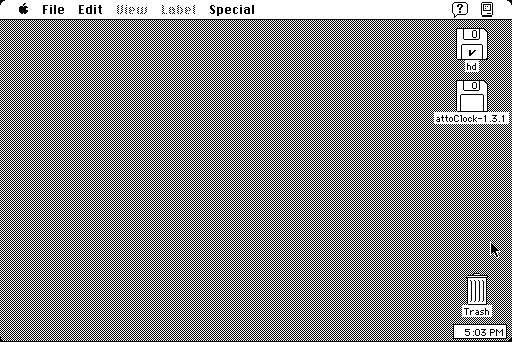

Download
attoclock1.31.zip (37K) attoClock 1.3.1 repackaged into a zipped hfs disk image and checksum file. The disk image can be mounted with Mini vMac.
attoclock1.31.cpt.hqx (49K) attoClock 1.3.1 in the original format.
copyright: Fred Condo
mod date: Nov 9, 1993
license: free for non-commercial use
A "very small application (7494 bytes) for System 7 that displays a digital clock in a small window." Can be placed on the right hand side of the screen and left running. Smaller than O'Clock.

If you find these downloads useful, please consider helping the Gryphel Project, which hosts them.
Here are the md5 checksums for the downloads, signed with Gryphel Key 5:
--------- GRY SIGNED TEXT --------- 20ecc58e610f826c6f72cade48c5d882 attoclock1.31.zip 63bf6a8aa021ed5ae73ef90f18d5b784 attoclock1.31.cpt.hqx ------- BEGIN GRY SIGNATURE ------- Gry/4Xa8CFcUzxdN/KTucOpi40GPtD6AZR/i4WALxSzjBTfOpx+1cn5L5RQULCD+ picIyJsVqHrXRiK9WTc++uoeRx+GJzoE7Q8zk6DCRZYyouLmw6aQERfReEh1Tkbf Hu2qY627hm1GldYvzEAWBS3QcqcxgmtIAmGSqAmdNCuXH3bvv0i3xUKMnNA/7dg2 -------- END GRY SIGNATURE --------